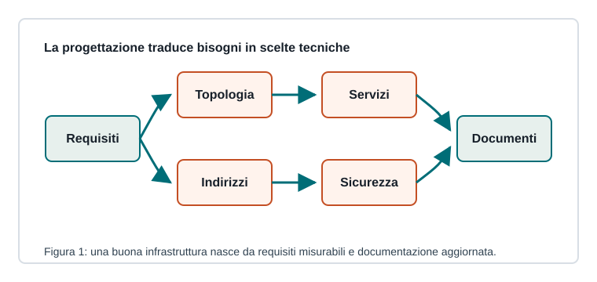

Capitoletto 4.4
Progettazione di infrastrutture
Progettare un'infrastruttura significa trasformare bisogni organizzativi in una rete documentata, sicura e manutenibile.

Raccolta dei requisiti
Prima dei dispositivi si studiano utenti, aule, servizi, vincoli, sicurezza, crescita futura e budget. Un requisito utile deve essere verificabile: “rete veloce” è generico, “30 PC navigano e accedono al server didattico” è più progettuale.
Scelte tecniche
| Scelta | Domanda guida |
|---|---|
| Topologia | dove passano collegamenti e apparati? |
| Indirizzamento | quali subnet servono? |
| Servizi | quali server sono necessari? |
| Sicurezza | chi può raggiungere che cosa? |
| Continuità | come si riparte dopo un guasto? |
Documentazione
Una documentazione minima include schema fisico, schema logico, piano IP, elenco apparati, credenziali gestite in modo sicuro, configurazioni principali, backup e procedure di emergenza.
Per un laboratorio: VLAN studenti, VLAN docenti, server didattico, DHCP separato, DNS interno, accesso Internet filtrato e backup delle configurazioni degli switch.
Collaudo
Il collaudo verifica che la rete soddisfi i requisiti: raggiungibilità, prestazioni, permessi, isolamento, servizi e recupero da errori. I test vanno registrati, così diventano riferimento per manutenzioni future.
Ripasso
Perché i requisiti devono essere verificabili?
Perché solo un requisito misurabile permette di sapere se il progetto funziona davvero.
Che cosa contiene un piano IP?
Subnet, gateway, intervalli DHCP, indirizzi statici, DNS e criteri di assegnazione.